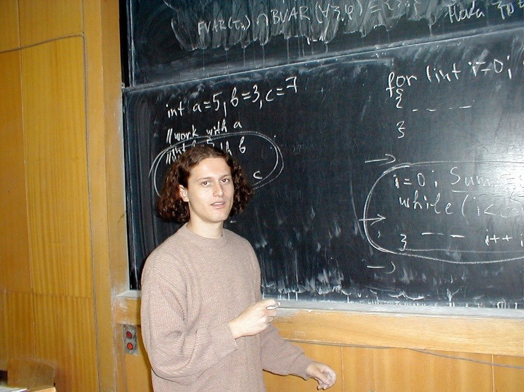
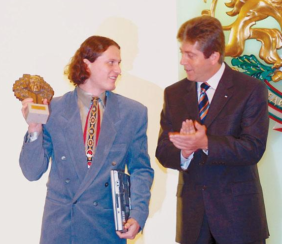
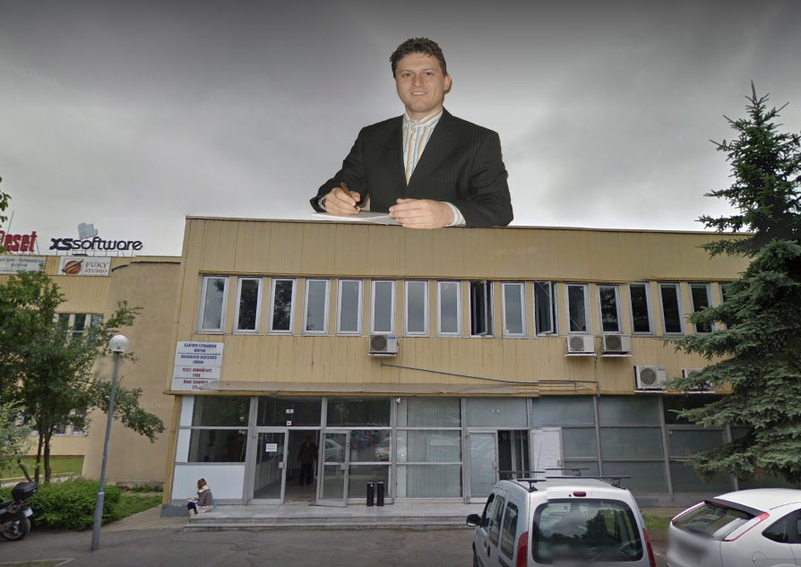
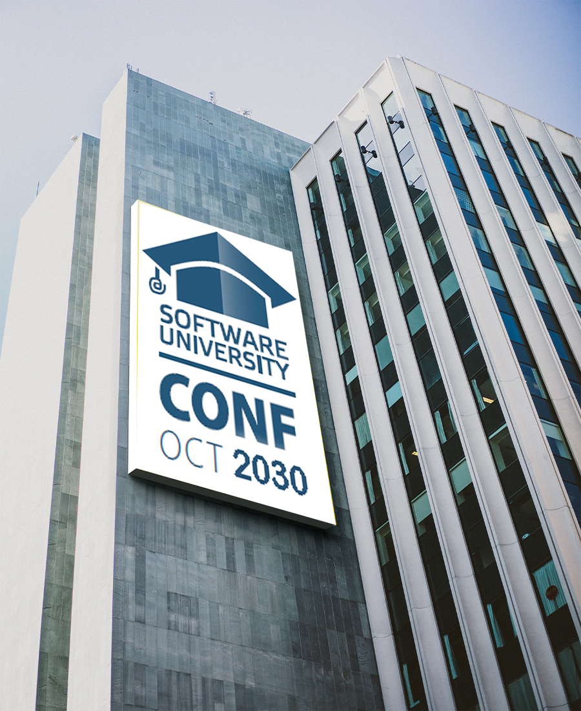
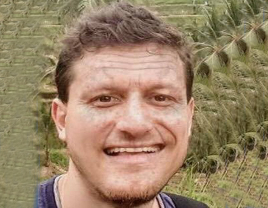

През далечните времена на 1998 година, 18-годишния Наков се прочува с хакерство.
Търсейки начини да трупа нови знания, известният Велико-Търновски хакер създава порно вирус, който му
помага да
купува книги на чужда сметка и да ползва безплатен интернет.
Скрива тайната си същност, като казва на хората, че това с което обича да се занимава е скулптора.
-2000 г.

Наков започва да преподава програмиране
Време е гения да поеме по своя път, който след многобройните олимпиади води към университет.
Наков е млад и наивен и все още не знае, че не те ще научат него, а той тях.
Недоволен от държавната система, Наков гневно хваща тебешира и започва да преподава в СУ.
Заражда се мечтата да обучава най-добрите ИТ специалисти.
-2004 г.

Наков получава наградата “Джон Атанасов”
Не много в час с технологиите и програмирането, президента все пак се впечатлява от таланта на Наков и
му връчва
награда “Джон Атанасов” за неговия принос и развитие. Светлин се прибира и се опитва да намери място в
стаята си, препълнена с такива.
-2013 г.

Software University
Softuni отваря врати и е безплатен за всички решили да се потопят в света на програмирането и
технологиите.
Наков гордо приема овациите от труда си.
-2030 г.

Softuni - по целия свят
Softuni отваря вратите си в 60 държави. Кадрите в България са отдавна в излишък. Всеки може да
програмира (това отдавна не е търсено умение) и конкуренцията е много ожесточена.
Наков се залавя за работа и започва да осигурява специалисти за целия свят. Той влиза в конфликти с
малки
фирми като Apple, Google, Facebook и други, поради факта, че разкрива големи фирмени практики и тайни и
започва
да злостлови по техен адрес публично.
-2050 г.

Учителя се отегля
След успешно изпълнена мисия Наков се пенсионира и оставя стотиците университети под строгия надзор
на армия софтуерни инженери. Наков си купува имение в Хавайските острови
и лежейки си на плажа изпълнява трудната професия на собственика.